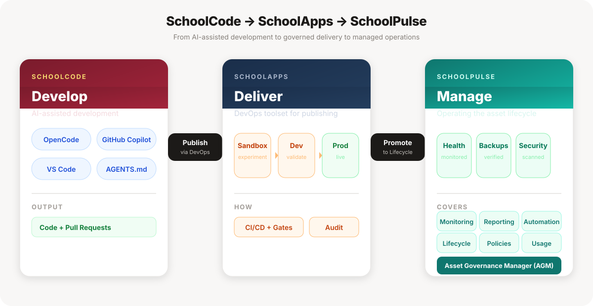

The tools we build with — and the governance that keeps every one of them accounted for.

SchoolCode builds with AI; SchoolApps publishes through DevOps to Sandbox → Dev → Prod. SchoolApps is under development.